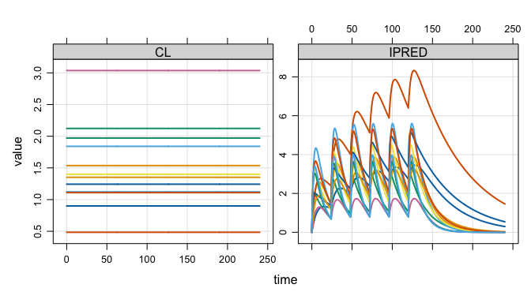
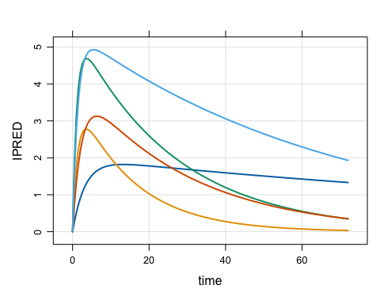

mrgsim.ds provides an Apache Arrow-backed simulation output object for mrgsolve, greatly reducing the memory footprint of large simulations and providing a high-performance pipeline for summarizing huge simulation outputs. The arrow-based simulation output objects in R claim ownership of their files on disk. Those files are automatically removed when the owning object goes out of scope and becomes subject to the R garbage collector. While “anonymous”, parquet-formatted files hold the data in tempdir() as you are working in R, functions are provided to move this data to more permanent locations for later use.
Installation
You can install the development version of mrgsim.ds from r-universe with:
# Install 'mrgsim.ds' in R:
install.packages('mrgsim.ds', repos = c('https://kylebaron.r-universe.dev', 'https://cloud.r-project.org'))Example
We will illustrate mrgsim.ds by doing a simulation.
library(mrgsim.ds)
library(dplyr)
mod <- modlib_ds("popex", end = 240, outvars = "IPRED,CL")
data <- expand.ev(amt = 100, ii = 24, total = 6, ID = 1:3000)mrgsim.ds provides a new mrgsim() variant - mrgsim_ds(). The name implies we are tapping into Apache Arrow Dataset functionality. The simulation below carries 1,446,000 rows.
out <- mrgsim_ds(mod, data)
out
. Model: popex
. Dim : 1.4M x 4
. Files: 1 [13.2 Mb]
. Owner: yes (gc)
. ID time CL IPRED
. 1: 1 0.0 1.243114 0.0000000
. 2: 1 0.0 1.243114 0.0000000
. 3: 1 0.5 1.243114 0.1275166
. 4: 1 1.0 1.243114 0.2449907
. 5: 1 1.5 1.243114 0.3531121
. 6: 1 2.0 1.243114 0.4525244
. 7: 1 2.5 1.243114 0.5438276
. 8: 1 3.0 1.243114 0.6275816Very lightweight simulation output object
The output object doesn’t actually carry these 1.4M rows of simulated data. Rather it stores a pointer to the data in parquet files on your disk.
This means there is almost nothing inside the object itself
What if we did the same simulation with regular mrgsim()?
The mrgsim.ds object is very light weight despite tracking the same data.
Handles like regular mrgsim output
But, we can do a lot of the typical things we would with any mrgsim() output object.
plot(out, nid = 12)
head(out)
. # A tibble: 6 × 4
. ID time CL IPRED
. <dbl> <dbl> <dbl> <dbl>
. 1 1 0 1.24 0
. 2 1 0 1.24 0
. 3 1 0.5 1.24 0.128
. 4 1 1 1.24 0.245
. 5 1 1.5 1.24 0.353
. 6 1 2 1.24 0.453
tail(out)
. # A tibble: 6 × 4
. ID time CL IPRED
. <dbl> <dbl> <dbl> <dbl>
. 1 3000 238. 0.886 0.166
. 2 3000 238 0.886 0.164
. 3 3000 238. 0.886 0.161
. 4 3000 239 0.886 0.158
. 5 3000 240. 0.886 0.156
. 6 3000 240 0.886 0.153
dim(out)
. [1] 1446000 4This includes coercing to different types of objects. We can get the usual R data frames
as_tibble(out)
. # A tibble: 1,446,000 × 4
. ID time CL IPRED
. <dbl> <dbl> <dbl> <dbl>
. 1 1 0 1.24 0
. 2 1 0 1.24 0
. 3 1 0.5 1.24 0.128
. 4 1 1 1.24 0.245
. 5 1 1.5 1.24 0.353
. 6 1 2 1.24 0.453
. 7 1 2.5 1.24 0.544
. 8 1 3 1.24 0.628
. 9 1 3.5 1.24 0.704
. 10 1 4 1.24 0.774
. # ℹ 1,445,990 more rowsOr stay in the arrow ecosystem
as_arrow_ds(out)
. FileSystemDataset with 1 Parquet file
. 4 columns
. ID: double
. time: double
. CL: double
. IPRED: double
.
. See $metadata for additional Schema metadataOr try your hand at duckdb
as_duckdb_ds(out)
. # Source: table<arrow_001> [?? x 4]
. # Database: DuckDB 1.5.1 [kyleb@Darwin 24.6.0:R 4.5.3/:memory:]
. ID time CL IPRED
. <dbl> <dbl> <dbl> <dbl>
. 1 1 0 1.24 0
. 2 1 0 1.24 0
. 3 1 0.5 1.24 0.128
. 4 1 1 1.24 0.245
. 5 1 1.5 1.24 0.353
. 6 1 2 1.24 0.453
. 7 1 2.5 1.24 0.544
. 8 1 3 1.24 0.628
. 9 1 3.5 1.24 0.704
. 10 1 4 1.24 0.774
. # ℹ more rowsTidyverse-friendly
We’ve integrated into the dplyr ecosystem as well, allowing you to filter(), group_by(), mutate(), select(), summarise(), rename(), or arrange() your way directly into a pipeline to summarize your simulations using the power of Apache Arrow.
Good for large simulations
This workflow is particularly useful when running replicate simulations in parallel, with large outputs
library(future.apply, quietly = TRUE)
plan(multisession, workers = 5L)
out2 <- future_lapply(1:10, \(x) { mrgsim_ds(mod, data) }, future.seed = TRUE)
out2 <- reduce_ds(out2)
plan(sequential)Now there are 10x the number of rows (14.5M), but little change in object size.
out2
. Model: popex
. Dim : 14.5M x 4
. Files: 10 [131.8 Mb]
. Owner: yes (gc)
. ID time CL IPRED
. 1: 1 0.0 1.198555 0.000000
. 2: 1 0.0 1.198555 0.000000
. 3: 1 0.5 1.198555 1.886228
. 4: 1 1.0 1.198555 2.876238
. 5: 1 1.5 1.198555 3.374510
. 6: 1 2.0 1.198555 3.603480
. 7: 1 2.5 1.198555 3.685466
. 8: 1 3.0 1.198555 3.687712Files on disk are automagically managed
All arrow files are stored in the tempdir() in parquet format
list_temp()
. 11 files [145 Mb]
. - mrgsims-ds-1439e1fc2d10c.parquet
. - mrgsims-ds-143de348a522a.parquet
. ...
. - mrgsims-ds-143e228164bf9.parquet
. - mrgsims-ds-143e24fd5dcfe.parquetThis directory is eventually removed when the R session ends. Tools are provided to manage the space.
purge_except_temp(out2)
. Discarding 1 files.
list_temp()
. 10 files [131.8 Mb]
. - mrgsims-ds-143de348a522a.parquet
. - mrgsims-ds-143de43d481a0.parquet
. ...
. - mrgsims-ds-143e228164bf9.parquet
. - mrgsims-ds-143e24fd5dcfe.parquetWe also put a finalizer on each object so that, when it goes out of scope, the files are automatically cleaned up.
First, run a bunch of simulations.
rm(out2)
rm(out)
plan(multisession, workers = 5L)
out1 <- mrgsim_ds(mod, data)
rename_ds(out1, "out1")
out2 <- future_lapply(1:10, \(x) { mrgsim_ds(mod, data) }, future.seed = TRUE)
out2 <- reduce_ds(out2)
rename_ds(out2, "out2")
out3 <- mrgsim_ds(mod, data)
rename_ds(out3, "out3")
plan(sequential)There are 12 files holding simulation outputs.
list_temp()
. 12 files [158.2 Mb]
. - mrgsims-ds-out1-1.parquet
. - mrgsims-ds-out2-01.parquet
. ...
. - mrgsims-ds-out2-10.parquet
. - mrgsims-ds-out3-1.parquetNow, remove one of the objects containing 10 files.
rm(out2)As soon as the garbage collector is called, the leftover files are cleaned up.
gc()
. used (Mb) gc trigger (Mb) limit (Mb) max used (Mb)
. Ncells 2143360 114.5 3811172 203.6 NA 3631209 194.0
. Vcells 3930513 30.0 16571476 126.5 16384 22219114 169.6
list_temp()
. 2 files [26.4 Mb]
. - mrgsims-ds-out1-1.parquet
. - mrgsims-ds-out3-1.parquetOwnership
This setup is only possible if one object owns the files on disk and mrgsim.ds tracks this.
If I make a copy of a simulation object, the old object no longer owns the files.
out4 <- copy_ds(out1, own = TRUE)
check_ownership(out1)
. [1] FALSE
check_ownership(out4)
. [1] TRUEI can always take ownership back.
Simulation in parallel
Some special handling is required when simulations are actually run in an R session different from the one where the model was loaded and where simulation outputs will be processed. One key example of this situation is simulation in parallel, especially when worker nodes are different R processes.
For example, we can run this simulation in parallel.
library(mirai)
mod <- modlib_ds("popex", end = 72)
. Loading model from cache.
data <- evd_expand(amt = 100, ID = 1:6)
daemons(3)
out <- mirai_map(
1:3,
\(x, mod, data) { mrgsim.ds::mrgsim_ds(mod, data) },
.args = list(mod = mod, data = data)
)[]
daemons(0)First, notice that we used modlib_ds() rather than mrgsolve::modlib(). The resulting object has the important information tucked away to safely simulate in parallel.
Now look at the output. When we print the object to the console, you will see that mrgsim.ds recognizes that the object was created in a different R process and updates pid as well as the pointer to the arrow data set:
out[[1]]
. Model: popex
. Dim : 876 x 4
. Files: 1 [10.5 Kb]
. Owner: no
. ID TIME CL IPRED
. 1: 1 0.0 0.2872539 0.0000000
. 2: 1 0.0 0.2872539 0.0000000
. 3: 1 0.5 0.2872539 0.2803440
. 4: 1 1.0 0.2872539 0.5197427
. 5: 1 1.5 0.2872539 0.7240634
. 6: 1 2.0 0.2872539 0.8983331
. 7: 1 2.5 0.2872539 1.0468586
. 8: 1 3.0 0.2872539 1.1733296
. [mrgsim.ds] pointer and source pid refreshed.I refer to this as “refreshing” the output: relocate back on the parent R process and re-create the pointer to the data on disk.
You can refresh a list of simulations like this
out <- refresh_ds(out)This will get you relocated back on the parent R process. Better yet, you should call reduce_ds()
out <- reduce_ds(out)This refreshes the simulation output objects and collects them into a single object
out
. Model: popex
. Dim : 2,628 x 4
. Files: 3 [31.4 Kb]
. Owner: yes (gc)
. ID TIME CL IPRED
. 1: 1 0.0 0.2872539 0.0000000
. 2: 1 0.0 0.2872539 0.0000000
. 3: 1 0.5 0.2872539 0.2803440
. 4: 1 1.0 0.2872539 0.5197427
. 5: 1 1.5 0.2872539 0.7240634
. 6: 1 2.0 0.2872539 0.8983331
. 7: 1 2.5 0.2872539 1.0468586
. 8: 1 3.0 0.2872539 1.1733296Now we have all three files collected in a single object that we can work with
plot(out, IPRED ~ time, nid = 5)
Save outputs
You can save the simulation output object for use later
This saves the object in an .rds file located in the inst directory. Importantly, the backing files are also relocated to the .rds location so they can be found later on.
On read, the object is fully functional again with ownership transferred to the new object.
out2 <- read_ds("inst/readme_temp/sims.rds")
out2
. Model: popex
. Dim : 2,628 x 4
. Files: 3 [31.4 Kb]
. Owner: yes (no gc)
. ID TIME CL IPRED
. 1: 1 0.0 0.2872539 0.0000000
. 2: 1 0.0 0.2872539 0.0000000
. 3: 1 0.5 0.2872539 0.2803440
. 4: 1 1.0 0.2872539 0.5197427
. 5: 1 1.5 0.2872539 0.7240634
. 6: 1 2.0 0.2872539 0.8983331
. 7: 1 2.5 0.2872539 1.0468586
. 8: 1 3.0 0.2872539 1.1733296Details
mrgsim.ds tracks the tempdir() location and the process ID (via Sys.getpid()) of the R process where the model was loaded. When simulation outputs are saved to file, the save location is always tempdir() from that parent R process. When simulating in parallel, this will likely be different than what a call to tempdir() says on the worker node.
At the time simulations are saved, the current R process id (pid) is saved to the simulation output object. In the parallel simulation case, this will be different than the pid from the parent R process, saved in the model object. The finalizer function for a simulation object which removes output files from disk when the object goes out of scope is only run when the finalizer is called from the parent R process as determined by Sys.getpid().
If this is so great, why not make it the default for mrgsolve?
There is a cost to all of this. For small to mid-size simulations, you might see a small slowdown with mrgsim_ds(); it definitely won’t be faster than mrgsim() … even with the super-quick arrow ecosystem. This workflow is really for large simulation volumes where you are happy to pay the cost of writing outputs to file and then streaming them back in to summarize.